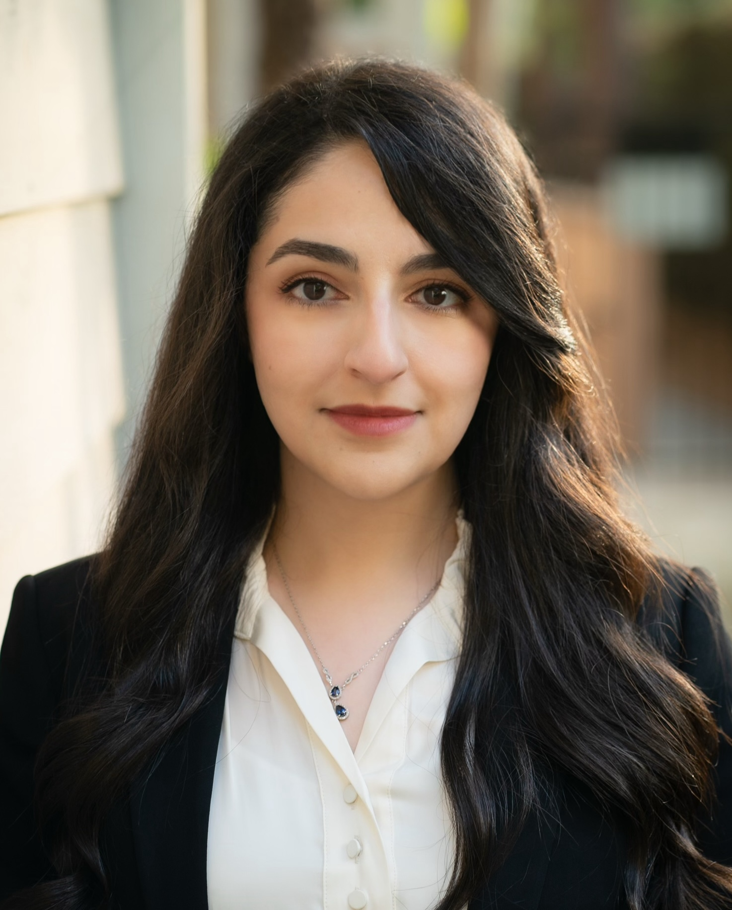

Paria Rashidinejad
Assistant Professor
University of Southern California
I am a WiSE Gabilan Assistant Professor of Electrical and Computer Engineering at the University of Southern California (USC). Previously, I was a Research Scientist at Fundamental AI Research (FAIR) Labs at Meta. Prior to that, I was a Founding Research Scientist at Nexusflow AI, providing reliable agentic AI solutions for enterprise use cases (now part of NVIDIA).
I received my Ph.D. in Electrical Engineering and Computer Sciences (EECS) from the University of California, Berkeley, under the supervision of Stuart Russell and Jiantao Jiao. At Berkeley, I was a member of the Berkeley AI Research (BAIR) Lab and the Center for Human-Compatible AI (CHAI). I hold a bachelor’s degree in Electrical Engineering from Sharif University of Technology.
The goal of my research is to design capable and general AI systems that integrate reliably into the real world. My current research focuses on mathematical foundations and algorithms to improve decision-making, prediction, reasoning, and alignment of AI systems, covering areas such as reinforcement learning, foundation models, model steering, and interpretability. I apply these methods to problems that arise in language models, systems, and healthcare.
Contact
-
paria [dot] rashidinejad [at] usc [dot] edu
-
EEB 510
Hughes Aircraft Electrical Engineering Center
3740 McClintock Ave.
Los Angeles, CA 90089